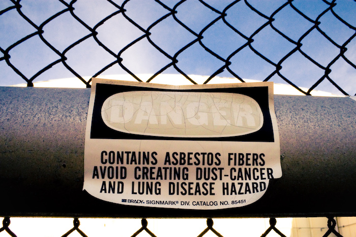
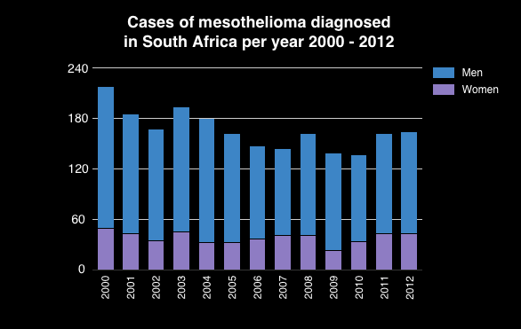

The National Institute for Occupational Health (NIOH) on Hillbrow's Hospital Street has a long history with asbestos. Its passages are lined with posters that tell the story of asbestos mining in South Africa – the country was once the world's third largest producer of the mineral.
One of the NIOH's pathologists, Dr Christopher Wagner, is credited with making the definitive link between asbestos exposure and cancer. That was in 1960, about 80 years after asbestos mining began in the Northern Cape.
The mines started to close in the 1990s – the last one shut its doors in 2002 – but it was only in 2008 that South Africa joined a growing list of countries that banned asbestos.
Asbestos is still all around us. Twenty-nine of the schools in Gauteng are built entirely or predominantly of material that contains asbestos, and another 214 schools are built partially of the material, according to data made public by the Gauteng Department of Education (GDE).
It's not surprising: from the late 1800s until the mid-1980s, asbestos was a popular building material thanks to its "magical" fire protection and insulating properties, its strength, and its relatively low manufacturing cost.
More than 3 000 products contained asbestos. It was mixed with cement to make building materials, such as roof sheeting, partition boards, ceiling boards, pipes and acoustic ceiling tiles. It was in vinyl-asbestos floor tiles, and friable asbestos was used as an insulation material.
The partially asbestos schools may be built with bricks and mortar, but have asbestos roofs, said Oupa Bodibe, the GDE's spokesperson.
During the early 1950s, the standard house built in Soweto had a corrugated asbestos roof and many homes still have them more than 50 years later.
Asbestos cement products were used almost routinely in the building of low-cost, mass housing in South Africa until the mid-1980s, according to a National Economic Development and Labour Council (Nedlac) research paper.
"As many as 80% of state buildings contain asbestos materials and products – including insulation materials used for insulating and hot water piping," stated the report.
Don't damage it
"There's very little evidence that buildings made with material containing asbestos are dangerous to your health," said Dr David Rees, the head of occupational medicine and epidemiology at the NIOH and professor of occupational health at the University of the Witwatersrand School of Public Health.
"The problem comes when the asbestos-containing structures are in disrepair," said Dr Rees.
If a building's roof is made of asbestos cement sheets, for example, there is no immediate risk to the people in that building. Research by the NIOH published in 2007 found no significant exposure to asbestos in the air among people living in houses with asbestos roofs in Soweto.
Asbestos becomes a health risk if the sheets are damaged so the asbestos fibres are exposed and able to disperse into the air.
It's when tiny asbestos fibres are inhaled into the lungs that they can cause serious respiratory diseases.
Friable or crumbly asbestos, such as the type used as insulation material, is more risky because it is much easier to reduce to a powder.
It's usually during renovations when people work on material that contains asbestos with power tools that dust containing asbestos fibres is released into the air, said Dr Jim Phillips, a specialist in the pathology unit of the NIOH.
If material that contains asbestos is drilled into, cut, cleaned using high-pressure water hoses or demolished, the fabric is disturbed and tiny fibres can be released, he said.
"Any person that, knowingly or unknowingly, performs work on asbestos or asbestos containing material, and any person that happens to be in the vicinity of such work, is in danger," states an NIOH pamphlet entitled Asbestos: The Silent Killer.
Even natural deterioration and weathering can loosen asbestos fibres. So it's important to maintain structures that contain asbestos materials in good condition, by coating them with paint or sealant and removing damaged material.
Replace and maintain: what do the regulations say?
The Department of Basic Education adopted school infrastructure norms and standards regulations in 2013 stipulating that all schools built entirely of asbestos had to be replaced by 29 November 2016.
Twenty-nine entirely asbestos schools have been included on the GDE's replacement list. None was rebuilt by the deadline.
According to the Gauteng Department of Education (GDE), the asbestos schools it has identified for replacement were all built before the 1980s.
That makes them over 40 years old, and there is evidence that some of them are not in a good state of repair.
Noordgesig Primary School in Soweto is an example. It has received a great deal of media attention because of the dilapidated condition of some of its 40 asbestos classrooms.
It has been scheduled for renovations since 2010, according to Equal Education, a non-governmental organisation that has been campaigning to improve the state of South Africa's schools since 2008.
Yet seven years later, the school's 1,500 pupils and 39 teachers are still waiting for the asbestos to be removed and replaced by brick and mortar buildings.
The school is one of the 29 schools the GDE has listed for replacement. But the new school is still at the design stage.
The school infrastructure norms and standards aren't the only regulations that apply to schools buildings that contain asbestos.
In 2001, the Department of Labour, as part of the Occupational Health and Safety Act, put in place asbestos regulations that apply to the department of education as an employer of thousands of teachers and other education staff.
Gabriel Mizan, an occupational hygiene scientist at the NIOH, summarised what the department of education has a duty, as an employer, to do under the asbestos regulations. It must:
- identify the asbestos in the school buildings;
- compile a written inventory;
- inform health and safety representatives;
- inform any person who will be doing work at the school or is likely to disturb the asbestos;
- regularly assess the condition of the asbestos containing structures; and
- maintain the asbestos in a good state of repair or remove it if necessary.
The GDE has not compiled inventories or maintenance plans for any of the 243 schools it has listed as entirely or partially made of asbestos, said the department's spokesperson, Oupa Bodibe.
"The department does not have the required capacity to compile the required inventory. However, we are in the process of acquiring additional capacity to deal with issues of this nature," he said.
Make sure people know where the asbestos is
In a research report published in 2013, Dr Phillips and other researchers at the NIOH described how they had analysed 45 samples taken from South African school buildings between 2003 and 2012 and found asbestos fibres in nearly three-quarters of those samples, it also found asbestos in three of five air filters submitted from education buildings.
"Those schools found to have buildings that contain asbestos should have warning notices placed in prominent places in the event of any refurbishment, reconstruction or demolition that might otherwise be undertaken without this knowledge and without adhering to the asbestos regulations," the researchers recommended in their report.
Anyone who carries out demolition work on a building that contains asbestos has to be registered with the Department of Labour, according to the asbestos regulations, and there are strict regulations about how asbestos is disposed of.
Khume Ramulifho, the Democratic Alliances's "shadow education MEC" in Gauteng, who has visited many of the schools on the GDE's asbestos lists, said he has not seen signs on any school buildings warning that they contain asbestos.
Policy for the management of asbestos in schools
The United Kingdom's department of health looked into the potential harm caused to children by asbestos exposure. Like South Africa, asbestos was used in the construction of many British schools until it was banned there in 1999.
Although its report stated that there was no "conclusive evidence of the relative risks of asbestos exposure in a school setting", it concluded that "due to their longer life expectancy and the long latency period for the disease to develop, children have an increased life-time risk of developing mesothelioma compared to adults if exposed to given doses of asbestos".
Mesothelioma takes about 30 years to develop after exposure to asbestos fibres, according to the World Health Organisation.
Asbestos regulations in the UK are similar to those in South Africa in that they require a "duty holder" to create a register of asbestos-containing materials present in a building and write a management plan that details how the condition of those materials will be monitored.
In 2015, the UK's Department for Education reviewed its policy on the management of asbestos in schools and in its report stated: "The employer should also provide adequate information, instruction and training for any members of school staff, including teachers, likely to disturb asbestos and ensure all school staff, and contractors are aware of the location of asbestos in the building,"
The department also decided to carry out air sampling in schools to better understand the levels of asbestos children could be exposed to, and to develop better and more targeted guidance on asbestos management in schools.
Schools in the United States also have to develop and maintain asbestos management plans, according to regulations set by the Environmental Protection Agency.
The GDE was asked whether it had a policy in place to deal with the maintenance of schools that contain asbestos. "The department is planning to replace all asbestos classrooms over time," replied Bodibe.
The GDE "continuously does condition assessments to determine all infrastructure intervention required at schools constructed from inappropriate material", Bodibe added.
Dr David Rees and Gabriel Mizan of the NIOH think it's important that South African schools should be assessed for risk and have asbestos management plans in place.
"The schools in Gauteng that are built with material that contains asbestos need to be inspected," said Mizan.
"Each school should have recommendations. You could budget money for painting and maintenance, and where there's damage, remove the asbestos," said Dr Rees.
"If I were a parent with a child in school, I'd like to know there's a proper maintenance programme. And I'd like the school governing body to have some say in the maintenance," said Dr Rees.
Equal Education, which conducted an audit of more than 180 schools in Gauteng in 2015, said of the GDE's approach to asbestos in schools. "It is important to note that the GDE does not consider this [asbestos] a health hazard, which is strange and unacceptable."
Asbestos-related disease in South Africa
Most people will probably have been exposed to low levels of asbestos fibres during the course of their lives, but it's generally people who are regularly exposed because of their work or from "substantial environmental exposure" who get sick.
People who are exposed to asbestos fibres can develop diseases such as asbestosis, an inflammatory condition of the lungs; lung cancers, such as mesothelioma, a form of cancer that affects the tissues that line the lungs, chest and abdomen; and other forms of lung disease.
Mesothelioma takes around 30 years to develop after a person has been exposed to asbestos, according to the World Health Organisation, and there is evidence that some types of asbestos are more of a health risk than others: crocidolite and amosite, which are known as amphibole asbestos because of the shape of their fibres, are seen as more dangerous than chrysotile.
South Africa reportedly has one of the highest incidence rates of mesothelioma in the world, thanks to its long history of asbestos mining, particularly crocidolite and amosite, but researchers think the disease may be underreported.
Between 2000 and 2012, an average of 166 new cases of mesothelioma were reported a year, according numbers published by South Africa's National Cancer Registry.
The global average age of death from mesothelioma is 70 years old, but in South Africa it was a found to be 63 years old. The disease is much more common in men than women.
Most cases of mesothelioma have a clear history of asbestos exposure, said Dr David Rees, head of occupational medicine and epidemiology at the National Institute of Occupational Health (NIOH) and professor of occupational health at the University of the Witwatersrand School of Public Health.
"But 5 to 10% of cases won't know where the asbestos they were exposed to came from," he said.
People who work in the asbestos mining industry, in the building and construction industry, the demolition industry, motor mechanics and power station workers are often exposed to asbestos in their jobs.
But people who have never worked in the asbestos industry can be exposed: either because they lived in an asbestos area, or because their parents or another family member worked with asbestos and brought the fibres home on their clothes. This is known as environmental exposure.
If a building containing asbestos is demolished without the correct precautions being followed, people in the vicinity can be exposed. For example, when New York's World Trade Center was attacked in 2011, tons of asbestos were released into the atmosphere.
Even people who unknowingly carry out repairs on asbestos-containing materials in their homes or other buildings may be exposed to asbestos-containing dust along with anybody else in the vicinity.
There are no recorded cases of mesothelioma in teachers as a result of exposure to asbestos in schools in South Africa, but there is also no information about the source of exposure to asbestos in the National Cancer Registry.
There have been cases of teachers developing mesothelioma in other countries, such as the United Kingdom and the United States.
In the UK, for example, there were 224 mesothelioma deaths recorded between 2003 and 2012 among "teaching professionals". Although the UK's department for education noted that it is difficult to directly link a death from an asbestos-related disease and exposure in a specific occupation because the disease takes such a long time to develop.
There have been a few compensation cases where British courts have ruled that people may have contracted mesothelioma after being exposed to asbestos fibres at school, the department said in a report.
Programming & Design: Alastair Otter
A Passmark project, produced by Media Hack Collective
This project was supported by a grant from the Taco Kuiper
fund for investigative journalism.